Two papers that put classic control certificates into RL training. One keeps the robot safe, the other keeps it on track. Both are used only during training, so the robot runs a plain policy.
A barrier \(h\) must not reach zero. A Lyapunov function \(V\) must reach zero. Each gets one inequality on its rate of change.
\(h\) may shrink, but more slowly the closer it gets to 0. Example: with \(\alpha = 2\) and \(h = 0.1\) m, \(h\) can drop by at most 0.2 m/s.
\(V\) must shrink at least this fast. Example: with \(\lambda = 2\), after 1 s, \(V\) is at most \(e^{-2} \approx 13.5\%\) of where it started.
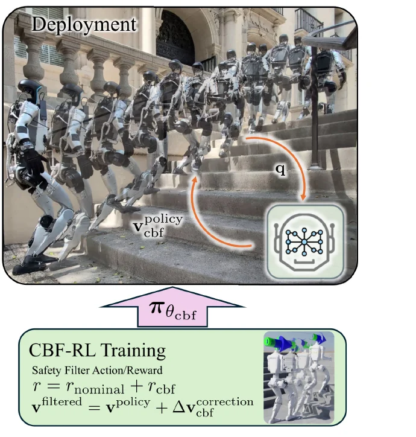
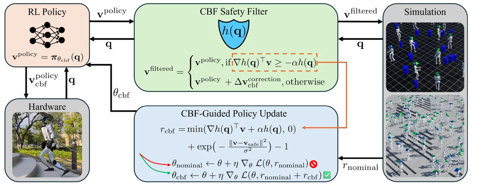
\(h\) works like a signed distance: positive is safe, 0 is the edge.
A single integrator. The action \(v\) is a velocity of a few coordinates.
Pick the velocity closest to what the policy wanted that still meets the CBF condition.
One linear constraint, so the QP is just a projection onto a half-plane. No solver needed, cheap across 4096 environments.
Both terms are 0 when the policy is already safe. The policy sees what it wanted, what the filter changed, and how the reward moved.
RL steps in discrete time. The error term vanishes as \(\Delta t \to 0\), so with \(\Delta t \le 0.01\) s the simple continuous-time condition is good enough.
For one round obstacle, the CBF rule is a speed limit: the robot may move toward the obstacle at most \(\alpha h\) m/s, where \(h\) is the gap. The closer it gets, the lower the limit. At \(h = 0\) it may not approach at all, so it slows down and slides past but never touches. Sideways motion is never limited.
Nearest obstacle or wall wins. 1000 random maps.
The policy learns to bend its own base velocity away, even when the command points at the obstacle.
\(J^{\text{sw}}\) is the foot Jacobian: it turns joint speeds into foot speed. Example for a 3-joint leg: \(J^{\text{sw}}_x = [0.3,\ 0.4,\ 0.1]\) m/rad and joint speeds \([1,\ 0.5,\ 0]\) rad/s give a toe speed of \(0.3 + 0.2 + 0 = 0.5\) m/s toward the riser, so \(h\) shrinks at 0.5 m/s.
Stops toe-stubbing on the next riser. Blind: proprioception only.
2D navigation, 1000 random maps, no domain randomization. Hover a bar for the randomized-dynamics number.
With the run-time filter left on, both reach ~99% (Dual 99.0%, Filter only 98.8%). The drop for Filter only shows it never learned safety.
| Method | No DR | DR |
|---|---|---|
| Dual, with run-time filter | 99.0% | 99.0% |
| Dual, no run-time filter | 92.7% | 91.7% |
| Reward only | 91.9% | 87.6% |
| Filter only, with run-time filter | 98.8% | 96.7% |
| Filter only, no run-time filter | 38.7% | 36.8% |
| Nominal | 51.4% | 55.0% |
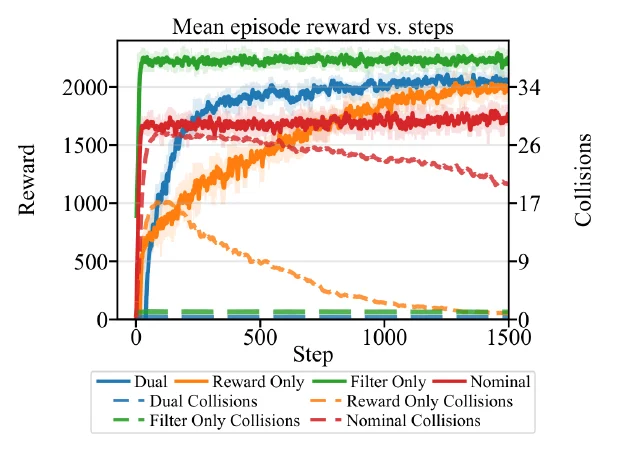
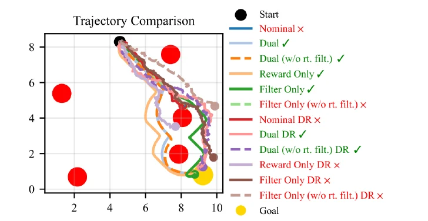
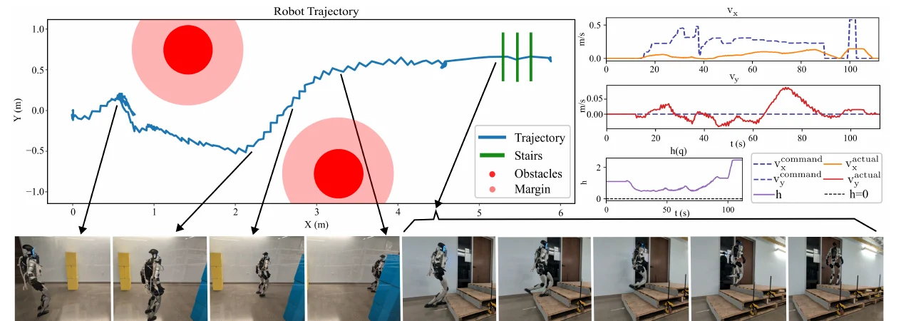
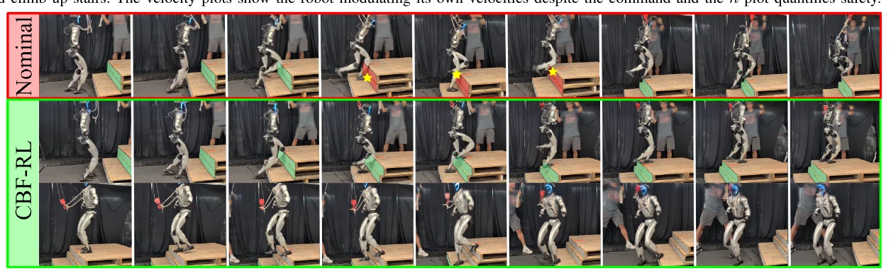
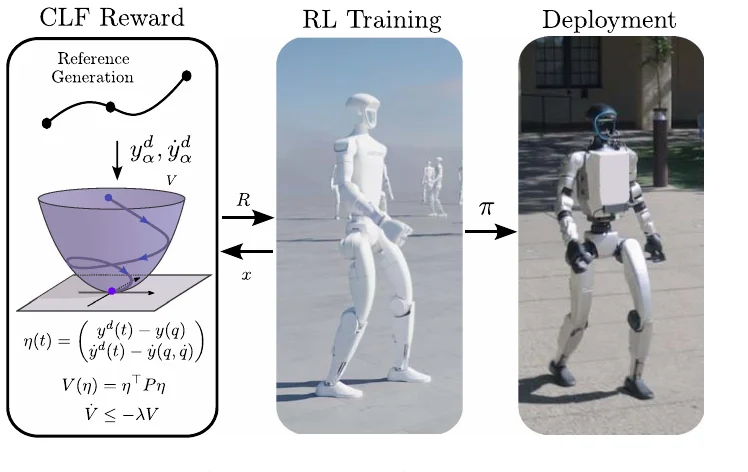
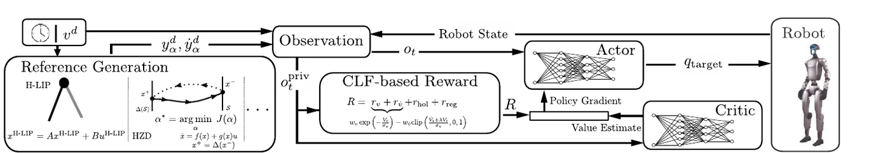
Smooth motion, plus an instant jump when a foot lands.
21 outputs \(y\): CoM position, pelvis angles, swing-foot pose, arm joints.
After feedback linearization the error is a double integrator, \(A_\eta = \left[\begin{smallmatrix}0 & I\\ 0 & 0\end{smallmatrix}\right]\), \(B_\eta = \left[\begin{smallmatrix}0\\ I\end{smallmatrix}\right]\). \(P\) solves the Riccati equation (CARE).
Under the LQR feedback \(V\) decays exponentially, so a controller meeting \(\dot V \le -\lambda V\) exists.
Equals \(w_v\) when the error is 0. One term replaces many per-joint tracking terms.
Zero when \(V\) shrinks at rate \(\lambda\) or faster. A finite difference avoids computing \(\ddot y\).
Hybrid linear inverted pendulum. Solve the fixed point \(x^* = A x^* + B u^*\) for the commanded speed; CoM path is closed-form, swing foot is a 5th-order Bézier curve.
Hybrid zero dynamics: a gait library over speeds (IPOPT + CasADi). In training, pick the nearest speed. Gave the best results.
| Term | Weight |
|---|---|
| Torque penalty | 1×10⁻⁵ |
| Action-rate penalty | 1×10⁻³ |
| Joint-limit penalty | 1.0 |
| CLF tracking \(w_v\) | 10.0 |
| CLF decay \(w_{\dot V}\) | 2.0 |
| Stance-foot position | 4.0 |
| Stance-foot velocity | 2.0 |
Mean velocity tracking error at 0.75 m/s, 200 randomized sim robots (Table II).
| Output | Tracking only | CLF | Change |
|---|
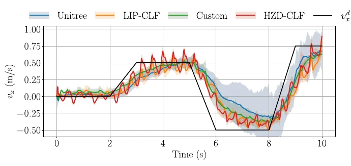
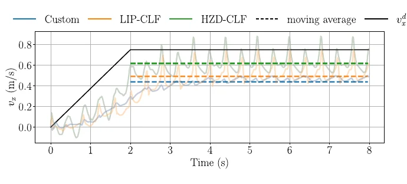
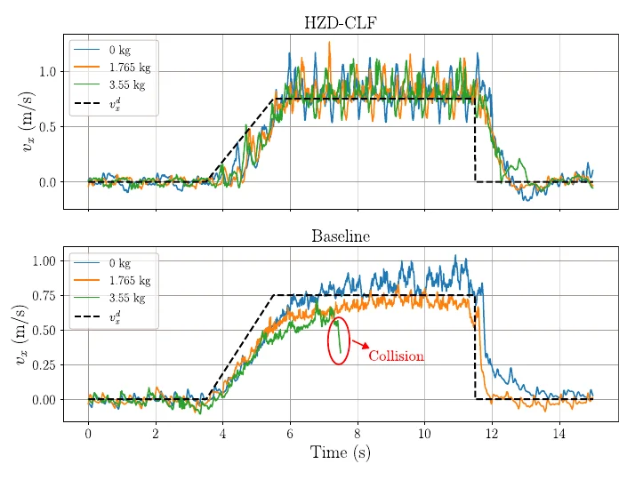
Also: a 0.25-mile outdoor walk with no falls. Potential-based shaping in place of the tracking reward never learned to walk.
| CBF-RL | CLF-RL | |
|---|---|---|
| Question | Is this action safe? | Am I converging to the reference? |
| Certificate | \(h(q) \ge 0\) | \(V(\eta) = \eta^\top P \eta\) |
| Condition | \(\dot h \ge -\alpha h\) | \(\dot V \le -\lambda V\) |
| You must supply | \(h\) and \(\nabla h\) by hand; a reduced-order model (foot Jacobian for stairs) | A reference gait (H-LIP or HZD) and \(P\) from the Riccati equation |
| Used in training as | Closed-form action filter + reward \(r_{\text{cbf}}\) | Rewards \(r_v + r_{\dot V}\) only, no filter |
| On the robot | Policy only | Policy only |
| Setup | G1 12-DoF lower body, IsaacLab, \(\Delta t = 0.005\) s, MLP [512, 256, 128] at 50 Hz | G1 21 actuated DoF, IsaacLab, MLP [512, 256, 128] at 50 Hz |
| Headline | 0.3 m stairs; 92.7% vs 38.7% success without filter | ~10% lower velocity error, less spread; 3.55 kg backpack |
| Run-time guarantee | None formal: safety is learned, not enforced | None formal: authors list it as future work |
| Code | lzyang2000/cbf-rl-navigation-demo | Zolkin1/robot_rl |
Classic controllers combine both in one CLF-CBF-QP: track with the CLF, stay safe with the CBF. Each paper moves one half into RL training. Neither paper uses both rewards in one run.